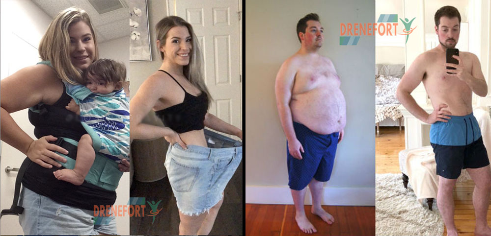

ADVERTORIAL
Essa nova pílula emagrecedora já era aprovada em mais de 34 países, e somente agora a Anvisa aprovou no Brasil. No estudo clínico, os 67 voluntários tiveram uma redução média de 8 quilos em 2 meses tomando apenas 2 cápsulas do composto por dia” – Dr. Marcos Gomes
(8741 Votos) – Por Portal Saúde

Uma nova descoberta está mudando a vida de milhões de pessoas em pouquíssimo tempo, cientistas europeus
desenvolveram após mais de 7 anos de estudo um novo composto que permite sugar 8kg de gordura profunda do
corpo, algo que antes era possível somente com a famosa lipoaspiração.
Todo mundo que tem aquela gordura localizada, e que está acima do peso, sabe o quão frustrante é ter de
olhar no espelho e não estar satisfeito com a própria aparência, a roupa ficar marcando, ou ir a praia e
ficar insegura de usar aquele biquíni que tanto gosta. Quem não gostaria de poder eliminar de uma vez por
todas a gordura que insiste em ficar, e recuperar sua autoestima de volta?
Atualmente muitas pessoas acham que a única solução para o emagrecimento são dietas e exercícios, e isso
realmente funciona para algumas pessoas, mas o que acontece é que depois de você perder peso, o peso volta
tudo de novo na grande maioria dos casos, isso porque com estes tipos de emagrecimento você está se livrando
somente da água que estava em seu corpo, e da gordura superficial, que representa menos de 10% da gordura
que você tem no corpo, ou seja, você não está perdendo gordura de verdade, e sim desinchando
momentaneamente.
Como então eliminar a gordura de verdade de uma vez por todas? Bom, para eliminar a gordura de vez, é
necessário eliminar a gordura profunda do corpo, que é a que te dá a aparência de estar gordo, os
pneuzinhos.
Porém este novo composto recém liberado no Brasil, conhecido popularmente como “lipo em cápsulas”, está
trazendo uma verdadeira revolução para as pessoas que querem emagrecer de verdade, de forma rápida, e o mais
importante, eliminando a gordura de verdade do corpo, e não só perder peso.
“Só quem está acima do peso sabe o que é estar no FUNDO DO POÇO! Eu acordava e não tinha vontade
de
fazer nada, não queria sair de casa e ser vista, e muito menos olhar no espelho. Eu tinha
somente
algumas roupas que ficavam boas em mim e só podia usar aquelas… fora a dor no joelho”
– Rosana Naves
Para entender melhor como este composto funciona, é necessário entender a diferença entre perder peso, e
eliminar gordura. Ao emagrecer, a primeira coisa que acontece é eliminar a água que estava retida no corpo,
e a gordura superficial, mas o problema é que essas também são as mais fáceis de ganhar de volta.
Este composto desenvolvido por cientistas, e chamado comercialmente de Drenefort, vem sido conhecido
como a
lipoaspiração em cápsulas, exatamente porque sua composição concentrada de fibras, age na gordura profunda
do corpo, e não te faz perder só peso da balança, e sim te dá resultado visíveis reais, e convenhamos, você
prefere ver o resultado ao se pesar na balança, ou ao se olhar no espelho e ver como está com o corpo
maravilhoso?
O Drenefort age na gordura profunda do corpo, formando um gel que suga a gordura toda do corpo e a elimina
pelas fezes. A gordura superficial representa 10% da gordura do seu corpo, e é a primeira a ir embora, mas
também a mais fácil de ganhar de volta.
Ao tomar 2 cápsulas de Drenefort por dia, uma no período da manhã e outra à noite, você forma um ciclo
contínuo de eliminação de gordura profunda, que elimina os 90% de gordura mais difíceis de eliminar, além de
eliminar também a água retida do corpo, a gordura superficial, e também reduzir a ansiedade por comida, o
desejo de comer doces, e o mais importante, não engordar após interromper o uso, justamente por ser composto
de fibras naturais específicas, que na concentração exata, permitem a eliminação da gordura.
Redação: Pode nos revelar quantos quilos você
perdeu e como foi tomar o Drenefort?
Roberta: Claro! Eu emagreci exatos 16kg de quando eu iniciei
meu tratamento com Drenefort até eu
terminar, que totalizou 4 meses. Foi o período mais transformador da minha vida, eu já tinha
tentado
inúmeras dietas, como a dieta dunkan, shakes pra emagrecer, até ficar sem comer, jejuar… essas
dietas
até funcionavam, eu perdia alguns quilinhos, mas um tempinho depois eu já ganhava tudo de novo,
até mais
do que eu já tava, e estava virando uma bola de neve, o Drenefort deu um fim nisso.
Redação: Qual foi a maior mudança na sua
vida em sua
opinião?
Roberta: Nossa! Até dificil dizer, porque mudou tudo! Eu
não usava roupas coladas, só roupas largas, antes eu me privava de comer as coisas porque
achava que assim ia emagrecer, mas no final só engordava mais ainda, com o Drenefort não
deixei de comer nada nada nada, nem adotei dieta maluca nenhuma, o que fiz foi:
Redação: Tem alguma dica pra passar pros
leitores?
Roberta: Não tenho nenhuma dica pra passar na realidade, não
tem muito segredo. Eu nunca imaginaria que o problema de eu não conseguir emagrecer é que eu
estava perdendo só a água retida e a gordura superficial, eu me importava demais com o que a
balança mostrava e na verdade o que importa é o que o espelho mostra, depois que entendi que o
que precisava eliminar mesmo era a gordura profunda…. minha vida mudou.
O Drenefort age diretamente na eliminação da gordura profunda do corpo, que é a que dá a aparência de gordo,
e a mais difícil de perder, eliminando até 4kg de pura gordura por mês.
Entramos em contato com o distribuidor do Drenefort no Brasil, e para este último lote de vendas disponível
no Brasil liberaram um desconto de 70% e frete expresso grátis para todo o Brasil.
De acordo com a distribuidora, a demanda pelo produto está tão alta, que o estoque estará esgotado em poucos
dias , a venda é exclusiva através do site oficial do Drenefort.
O desconto é aplicado automaticamente clicando abaixo:
Além disso, os fabricantes do Drenefort confiam tanto na eficácia do produto que eles concordaram em
oferecer uma garantia blindada aos nossos leitores.
O Drenefort oferece 30 dias para você emagrecer sem risco algum. Se você não emagrecer nesse período, a
distribuidora do Drenefort no Brasil compra os frascos de você – pelo mesmo preço que você pagou. Não tem
desculpa para não experimentar.
Ao contrário dos termogênicos e inibidores de apetite, o Drenefort não tem efeitos colaterais prejudiciais à
saúde. Sendo recomendado para todos que desejam perder peso e eliminar gordura de modo rápido e eficaz.
Para explicar o porquê e fazer uma comparação entre os emagrecedores, convidamos o professor de Medicina e
pesquisador, Dr. Clóvis Ribeiro.
Redação: Qual sua opinião sobre inibidores de
apetite?
Doutor Clóvis: O problema dos inibidores de
apetite é que eles
agem modificando alguns hormônios no cérebro, imitando a sensação de saciedade. Para uns ele
funciona como uma beleza, mas para a grande maioria, assim que você para de enganar os seus
hormônios, o seu cérebro volta ao estado natural, e você começa a comer em dobro. O seu apetite vai
voltar com força total, e isso faz algumas pessoas ganharem todo o peso que perderam, quem sabe até
mais. Sem contar os efeitos psicológicos devastadores que estes remédios causam.
Redação: E os termogênicos, aqueles que aceleram
o metabolismo?
Doutor Clóvis: Os termogênicos forçam o seu
corpo a acelerar o metabolismo, mexendo na bioquímica dele. Por consequência, você começa a queimar
calorias e a emagrecer, mas você também acelera o seu coração. Isso pode levar a problemas cardíacos
e, em casos mais sério, até mesmo infarto. Assim como os inibidores de apetite, assim que você parar
de tomar, seu metabolismo vai voltar a ser como era, e você vai ganhar tudo de novo. Ambos os
inibidores de apetite e os termogênicos são apenas soluções de curto prazo e que geram efeitos
colaterais devastadores para algumas pessoas. Para outras, eles funcionam muito bem, mas os riscos à
saúde superam os ganhos.
Redação: E o composto de Drenefort, você
recomenda? Qual sua opinião?
Doutor Clóvis: O que eu sempre indico para
emagrecer são exercícios físicos e reeducação alimentar. Isso seria o ideal. Porém, algumas pessoas
simplesmente não conseguem emagrecer apenas com isso, pois tem muita gordura profunda, e não somente
a superficial, e pensando na saúde delas, eu sou obrigado a dizer que o composto de Drenefort é
extremamente superior aos termogênicos e aos inibidores de apetite, e possuem minha recomendação
apenas se você não teve resultados com exercícios ou dietas, ou teve mas voltou tudo ao normal. Se
você já tentou de tudo e nada funcionou para emagrecer de verdade, então o composto de Drenefort é o
que recomendo para todos neste caso, com uso limitado a duas cápsulas por dia, por ser altamente
concentrado.
Redação: Você poderia dar mais detalhes?
Doutor Clóvis: Claro. O Drenefort é composto
de fibras naturais que sugam a gordura do corpo fazendo com que a gordura profunda seja eliminada
pelas fezes, o que não altera a bioquímica do seu corpo. As fibras são ingeridas, depois se ligam às
moléculas de gordura, e depois são eliminadas. Seu metabolismo não sofre nenhuma mudança e seus
hormônios da saciedade também não. Logo, não existem efeitos colaterais. Porém, ele é
contra-indicado para gestantes, pelo fato de o composto ser altamente concentrado, e agir exatamente
na gordura profunda, o que não é recomendado para gestantes.
Mas se você usar o Drenefort por algumas semanas e atingir o seu peso ideal, pra que você vai querer
emagrecer mais, não é mesmo? Aí você já pode interromper o uso e aproveitar a sua vida com muito
mais saúde.
“Percebia que meu marido não me olhava mais da mesma maneira”
“Estava bem insatisfeita com a minha aparência e percebia que meu marido não me olhava mais da mesma maneira, depois de tomar o Drenefort eu já emagreci 4 kilos na primeira semana, e no total perdi 15 kilos no tratamento, parei de tomar depois de um tempo porque não queria emagrecer ainda mais”. – Cristiane Cunha, 43 anos
“Eu precisava fazer algo a respeito, tentei de tudo mas nada deu certo”
“Com o tempo fui ficando mais desleixado e fui engordando aos poucos, até que um dia me olhei no espelho e vi como estava imenso, eu precisava fazer algo a respeito, tentei de tudo mas nada deu certo, emagrecia mas voltava tudo de novo depois, tomei o Drenefort e pra mim foi uma mudança da água pro vinho, indiquei já pra todos meus amigos.” – Roberto Nunes, 51 anos
“Como não tenho muito tempo para ir a academia, e sou ruim de fazer dieta, optei por tomar o Drenefort”
“Num domingo meu marido e eu resolvemos ir pra praia, não lembrava nem mais como era por um biquíni, depois desse dia fiquei traumatizada e botei uma coisa na minha cabeça, eu tinha que emagrecer! Como não tenho muito tempo para ir a academia, e sou ruim de fazer dieta, optei por tomar o Drenefort, e foi a melhor escolha que fiz na vida.” – Rosana Costa, 32 anos
“Minhas amigas ficaram até preocupadas comigo”
“Comecei a tomar o Drenefort e não avisei pra ninguém, emagreci tanto que minhas amigas ficaram até preocupadas comigo, mas depois ficaram implorando pra eu dizer qual era o segredo, contei pra elas e já to conseguindo ver o resultado nelas também, é impressionante”. – Vera Lúcia, 49 anos
“Nem lembrava mais como era ser magro”
“A primeira parte que notei muita diferença foi no rosto, eu estava com o rosto bolachudo, redondo, nem lembrava mais como era ser magro, última vez que havia me olhado no espelho e sentido orgulho de verdade da minha aparência eu tinha meus 20 anos, depois disso foi só ladeira abaixo, o Drenefort mudou minha vida com certeza”. – Ronaldo Magalhães, 58 anos
© Copyright 2022 DRENEFORT
Ingredientes principais: Espirulina (Arthrospira platensis), Psyllium (Plantagoovotae), L-Carnitina e Quitosana.
REFERÊNCIAS E ESTUDOS CIENTÍFICOS:
1-
Efeitos da espirulina na
perda de peso
2- Efeitos
da suplementação de espirulina na obesidade: uma revisão sistemática e meta-análise de ensaios
clínicos randomizados
3-
Efeitos de saciedade
do psyllium
4-
EFEITOS ERGOGÊNICOS DA
L-CARNITINA NO METABOLISMO LIPÍDICO
5-
Efeitos da suplementeação de L-carnitina combinada ao exercício aeróbio
6-
Quitosana como suplemento dietético para perda de peso
Aviso legal: Os resultados podem variar de pessoa para pessoa, a fórmula de saúde não garante que obterá 100% do
resultado obtido das pessoas deste artigo. Este produto não se destina a diagnosticar, tratar, curar ou
prevenir qualquer doença. Esta informação não constitui aconselhamento médico e não deve ser
considerada como tal. O produto é aprovado pela ANVISA/Inmetro nos termos da RDC 240 de 26/07/2018(Dispensa de registro).
Green Lime Empreendimentos Comerciais LTDA
CNPJ 32.068.180/0001-30
Rua João Espezim, 922 - Saco dos Limões - Florianópolis - SC, 88045-40, Telefone (12)98283-4696
Política de Privacidade | Termos de Uso | Política de Troca e Devolução